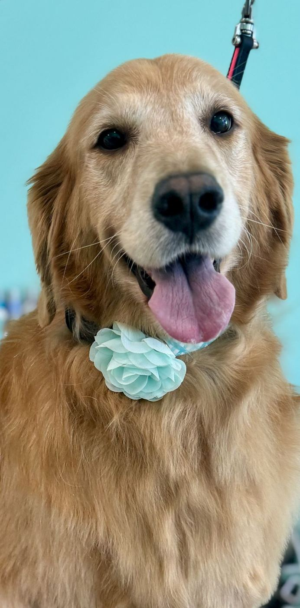
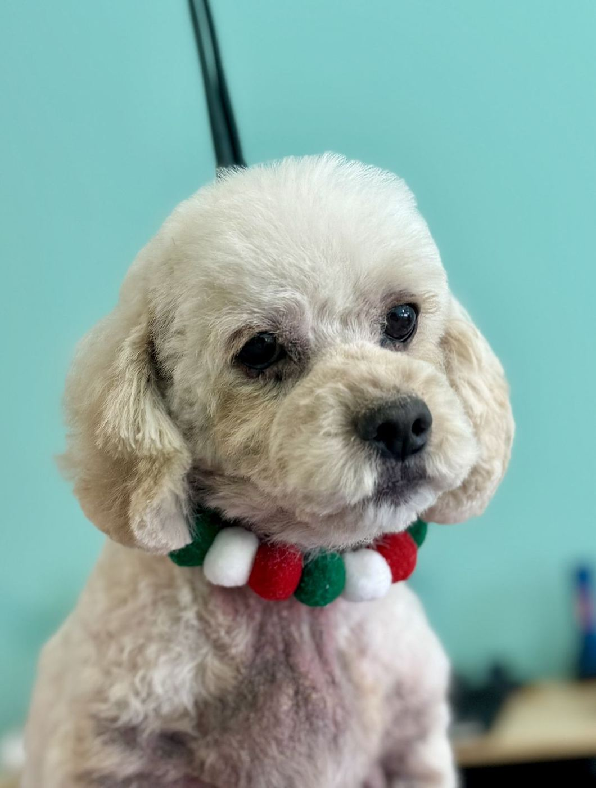
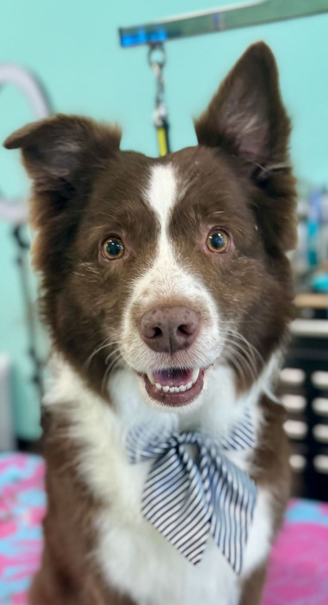
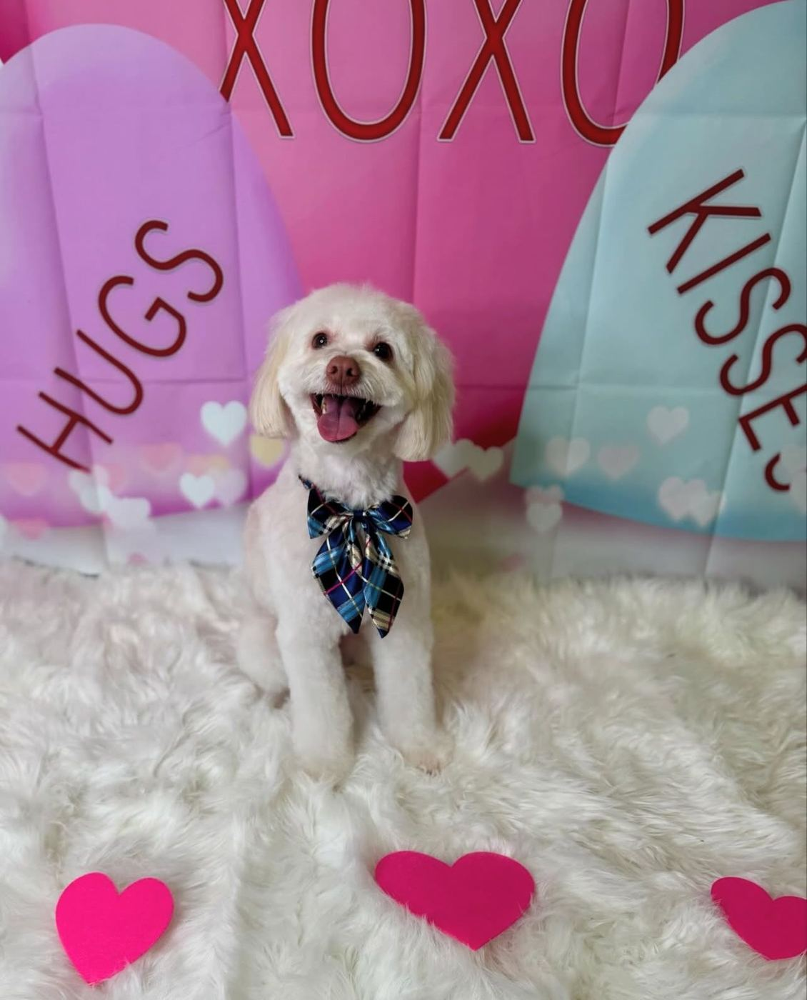

Space City Pet Spa
Full grooms, baths and a self-wash for big dogs on W Lake Houston Pkwy, with gentle care from Ginger and her crew.
Call (832) 955-1955Services
// SERVICESIn orbit
// CREWFreshly groomed




// 17 REVIEWS5.0★ incoming
I am so pleased with the grooming services. I have used the self wash many times for my two big dogs. Recently I took my little dog for a full grooming. She needed it! And they did such an amazing job. Recommend them and support your local small businesses.
Nala’s first haircut was perfect!! Ginger was incredibly kind and gentle with her ,I could tell she truly cared. She made Nala look absolutely beautiful. I’m so happy with the result. Thank you, Ginger!!
I ABSOLUTELY love to bring my girl here, she is always treated with so much care and the haircuts are always better than what we envisioned, she loves to come here and we are very please with their service.
They did an amazing job on my mini poodle puppy and they took good care of him. My family loves his new summer cut. Thanks so much, we’ll be back!
OPERATING HOURS
| Mon–Tue | 8 AM–5 PM |
| Wed | 7:30 AM–5 PM |
| Thu–Fri | 8 AM–5 PM |
| Sat | 9 AM–2 PM |
| Sun | Closed |